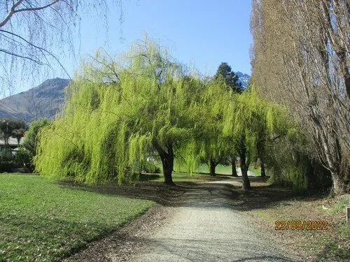

乔木 · 植物界
垂柳 Salix babylonica

枝条细长下垂的落叶乔木，早春先叶开花，是河岸堤畔最常见的园林树种，折柳送别的文化意象流传千年。
- 分类
- 门被子植物门纲木兰纲目杨柳目科杨柳科属柳属
- 栖息环境
- 河岸、湖畔、沟渠与湿地边缘，喜水湿，耐寒耐涝
- 地理分布
- 中国黄河流域及长江流域各地，亚洲、欧洲、美洲广泛栽培
- 保护级别
- 暂无评估；中国未列入国家重点保护野生植物名录
物种志
垂柳为落叶乔木，高可达 18 m，树冠开展，枝条细长柔软、下垂至水面，小枝黄绿色。叶片披针形，边缘具细锯齿，两面无毛或背面微带白粉，叶柄短而扁平。早春先叶开花，花序为葇荑花序，雄花序黄色并具 2 枚腺体，雌花序绿色；蒴果成熟后裂开，种子基部生有白色绒毛，即人们熟悉的柳絮，可随风飘散。
垂柳原产中国黄河流域与长江流域，喜水湿环境，耐寒、耐水淹，常栽植于河岸、湖畔与堤坝，是江南园林的重要元素。枝条柔韧，可编织筐篮与柳帽；木材可制器具；柳条、柳芽与柳絮均可入药。古人折柳送别，以“柳”谐音“留”，柳树因此成为离别与思念的象征，贺知章“碧玉妆成一树高”的诗句更让它家喻户晓。
形态与习性
- 株高可达 18 m，冠幅可达 10 m
- 花期3–4 月，先花后叶
- 果期4–5 月，蒴果开裂飘出柳絮
- 光照喜光，不耐庇荫
- 水分喜水湿，可耐短期水淹
- 土壤湿润的沙壤土或黏壤土
- 主要用途园林观赏、枝条编织、固堤护岸
趣味知识
- 垂柳枝条可以扦插繁殖，剪一段插进湿润的土里，很快就能生根成活。
- 春季飘飞的柳絮其实是垂柳的种子，种子基部带有白色绒毛，可随风远播。
- 古人折柳赠别，因“柳”与“留”谐音，寄托挽留不舍之意，这一习俗流传至今。